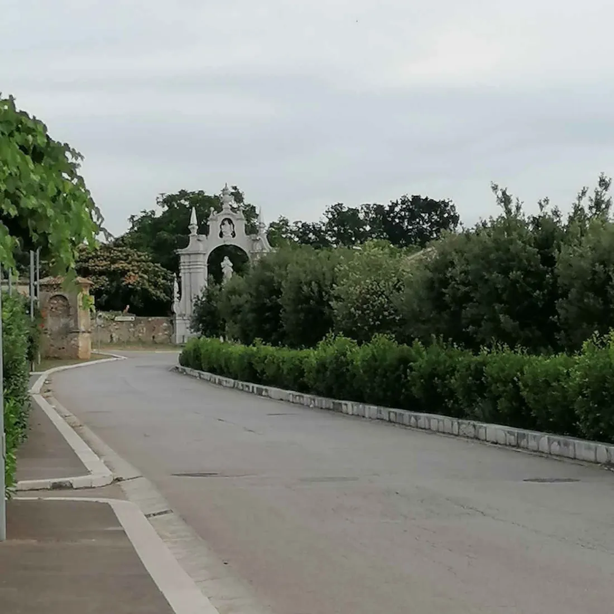
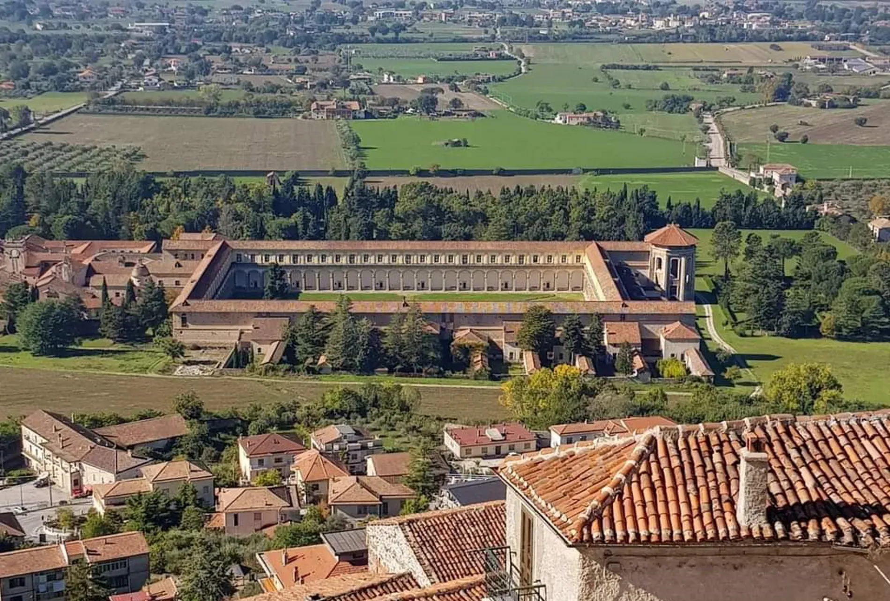

A Padula, sul viale della Certosa
84034 Padula (SA)

Come arrivare
In auto
Autostrada A2 del Mediterraneo, uscita Padula-Buonabitacolo. Poi si seguono le indicazioni per la Certosa di San Lorenzo: Demetra è sul viale che ci porta.
Parcheggio
C'è un parcheggio pubblico gratuito a due passi dalla casa.
A piedi alla Certosa
Dalla porta di casa si prende il viale dei monaci: da una parte c'è l'arco di San Bruno, dall'altra la Certosa.

Domande frequenti
Quanto è lontana la Certosa?
Il viale davanti alla casa porta dritto alla Certosa di San Lorenzo: ci si va a piedi.
Dove si parcheggia?
C'è un parcheggio pubblico gratuito vicino alla casa.
La colazione è inclusa?
Sì, una colazione di cortesia con cornetti e succhi.
Si possono portare animali?
Sì, su richiesta, con un supplemento di 25 €.
Come si cancella una prenotazione?
Fino a 14 giorni prima dell'arrivo la cancellazione è gratuita e l'acconto viene restituito.
Si può passare dallo spaccio senza dormire da voi?
Sì. Per essere sicuri di trovare qualcuno, scrivete prima a Gemma su WhatsApp.